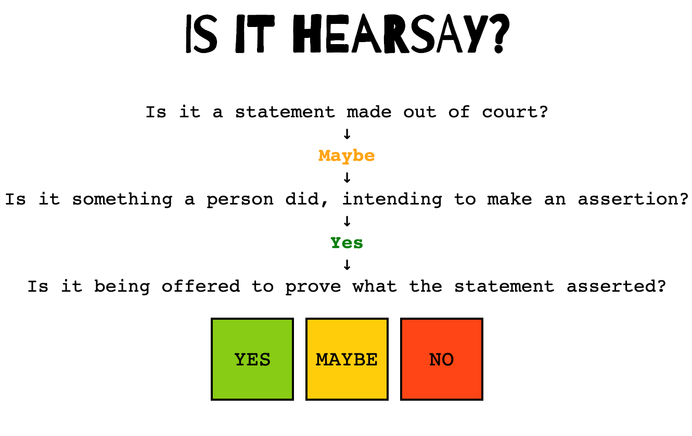

Projects
Home
About
CV
 POPO
POPO
Pop On Pop Off, a 3D visual programming language for VR
watch video
There Are No Eyes Here
A game using public domain works from 1925
play game
SCCUFL 2.0
A remake of the special collections VR library using Unreal Engine
The Stillness in the Room
A VR Emily Dickinson reading room and immersive research environment
watch video
 SCCUFL-VR
SCCUFL-VR
The Special Collections of CU Fairytale Library, featuring historical and illustrated fairy tale books from CU Boulder
visit SCCUFL
 VR Viz
VR Viz
A tool for making simple VR data visualizations using A-Frame and D3.js
Visualize
The Pathetic Dot
A game illustrating Lawrence Lessig's theory of code as law
play game

Is It Hearsay?
A web app that tells you whether something is hearsay under the Federal Rules of Evidence
play game
 My Favorite Murder, the Game
My Favorite Murder, the Game
A browser game about murderers, cats, and cookies, based on the podcast by Karen Kilgariff and Georgia Hardstark
play game